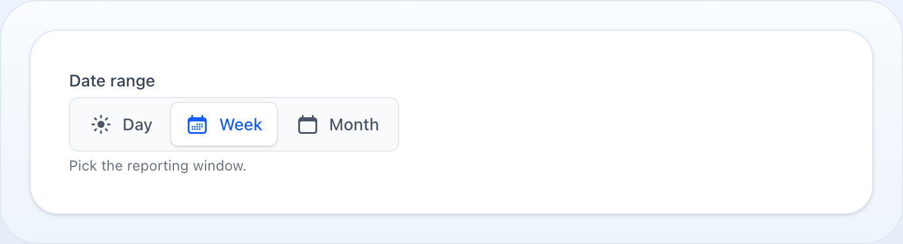
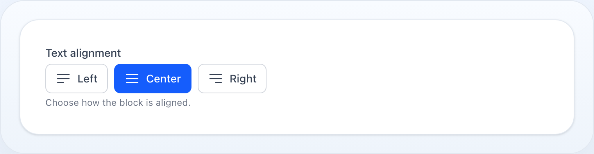
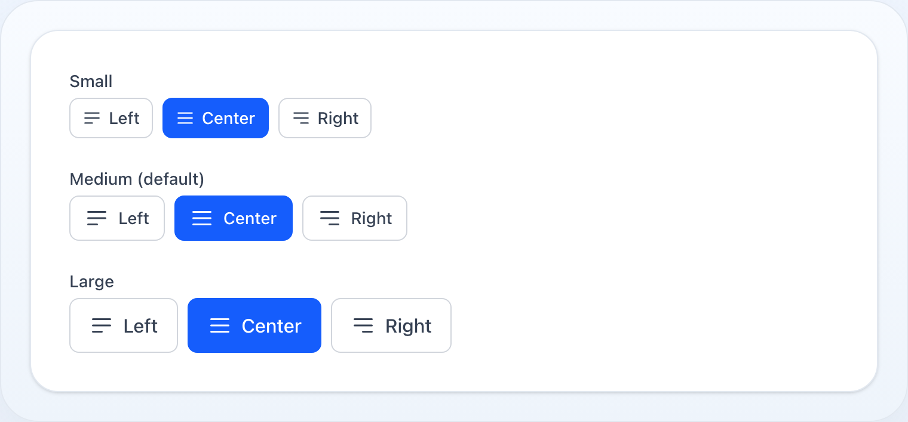

Formuláře
Radio
Skupina radio tlačítek pro výběr jedné možnosti.


Kompaktní segmentovaný ovladač — pilulkové zvýraznění klouže po sdílené dráze.

Samostatná tlačítka; vybrané je vyplněné akcentovou barvou.

Každá varianta zabarví vybranou možnost pomocí ->color() — zde řada karet v barvě danger.

Segmentovaná a tlačítková varianta se škálují přes ->sm() / ->md() / ->lg().
Na této stránce
Skupina radio tlačítek pro výběr jedné možnosti.
use NyonCode\WireForms\Components\Radio;Použití
Radio::make('priority') ->options([ 'low' => 'Low', 'medium' => 'Medium', 'high' => 'High', ])Dynamické options
Radio::make('plan') ->options(fn () => Plan::active()->pluck('name', 'slug')->toArray())Options z enumu
Předejte třídu PHP enumu pro rozvinutí jeho case na options value => label. Labely pocházejí z
getLabel(), když enum implementuje Foundation\Contracts\Enum\HasLabel, jinak se
z názvu case udělá headline. Pole je také auto-omezeno na hodnoty enumu pravidlem in:.
Detaily viz Select › Options z enumu.
Radio::make('status')->options(Status::class)Když enum také implementuje Foundation\Contracts\Enum\HasIcon nebo
Foundation\Contracts\Enum\HasColor, ikona i akcentová barva každého case se vyzvednou
automaticky z ->options(Enum::class) — žádné volání ->icons() / ->colors() není potřeba.
Explicitní ->icons() / ->colors() položky stále vyhrají nad těmi odvozenými z enumu.
enum Plan: string implements HasLabel, HasIcon, HasColor{ case Free = 'free'; case Pro = 'pro'; public function getLabel(): ?string { /* … */ } public function getIcon(): string|Icon|null { return match ($this) { self::Free => Icon::gift, self::Pro => Icon::star, }; } public function getColor(): string|Color|null { return match ($this) { self::Free => Color::Gray, self::Pro => Color::Success, }; }} // Ikony + barvy per option pocházejí obojí rovnou z enumu:Radio::make('plan')->options(Plan::class)->cards();Popisy
Radio::make('plan') ->options([ 'free' => 'Free', 'pro' => 'Professional', ]) ->descriptions([ 'free' => 'Limited features, no support', 'pro' => 'All features, priority support', ])Dynamické popisy:
Radio::make('plan') ->options(fn () => Plan::pluck('name', 'slug')->toArray()) ->descriptions(fn () => Plan::pluck('description', 'slug')->toArray())Inline layout
Radio::make('size') ->options(['s' => 'S', 'm' => 'M', 'l' => 'L']) ->inline()Kartová varianta
->cards() vykreslí každou možnost jako vybíratelnou kartu (styl FluxUI). Karty se skládají
svisle ve výchozím stavu; přidejte ->inline() pro vodorovnou řadu.
Radio::make('plan') ->options(['free' => 'Free', 'pro' => 'Pro', 'team' => 'Team']) ->descriptions([ 'free' => 'For personal projects.', 'pro' => 'For growing teams.', 'team' => 'Advanced controls & SSO.', ]) ->cards()Karty s ikonami
Poskytněte mapu value => icon (nebo nechte HasIcon enum je dodat automaticky — viz
Options z enumu).
Radio::make('plan') ->options(['free' => 'Free', 'pro' => 'Pro', 'team' => 'Team']) ->icons(['free' => 'gift', 'pro' => 'star', 'team' => 'user-group']) ->cards()Karty bez indikátorů
Skrýt radio tečku na každé kartě — výběr je ukázán jen zvýrazněným ohraničením.
Radio::make('plan') ->options([...]) ->cards() ->hideIndicator()Segmentovaná varianta
Na úzkých obrazovkách se segmenty roztáhnou rovnoměrně přes celou dráhu (zalamující
řádky zůstávají full-width); od breakpointu sm nahoru si ovladač drží svou
vnitřní šířku.
->segmented() vykreslí kompaktní segmentovaný ovladač — pilulkové zvýraznění klouže po
sdílené dráze. Ikony jsou podporovány i zde.
Radio::make('range') ->options(['day' => 'Day', 'week' => 'Week', 'month' => 'Month']) ->segmented()Tlačítková varianta
->buttons() vykreslí každou možnost jako samostatné tlačítko; vybrané je vyplněné
primary barvou. Tlačítka se skládají svisle ve výchozím stavu — přidejte ->inline() pro řadu.
Radio::make('alignment') ->options(['left' => 'Left', 'center' => 'Center', 'right' => 'Right']) ->icons(['left' => 'bars-3-bottom-left', 'center' => 'bars-3', 'right' => 'bars-3-bottom-right']) ->buttons() ->inline() // vedle sebe; vynechejte pro svislý stackIkony fungují v každé variantě — výchozí seznam,
cards,segmentedabuttons— ať nastavené přes->icons([...])nebo odvozené zHasIconenumu.
Velikost
Tlačítkové varianty (segmented, buttons) přijímají velikost přes sdílené HasSize
API: ->size('xs'|'sm'|'md'|'lg') nebo zkratky ->sm(), ->md(), ->lg() (výchozí md).
Padding, velikost písma a ikony možností se škálují společně.
Radio::make('range') ->options(['day' => 'Day', 'week' => 'Week', 'month' => 'Month']) ->segmented() ->sm() Radio::make('alignment') ->options(['left' => 'Left', 'center' => 'Center', 'right' => 'Right']) ->buttons() ->lg()Barva
Zabarvěte vybranou možnost pomocí ->color() (nebo Color enumu). Aplikuje se na každou
variantu — nativní radio akcent, segmentovaný label, výplň tlačítek a
ohraničení/prstenec/ikonu/indikátor karty. Výchozí je primary.
use NyonCode\WireCore\Foundation\Colors\Color; Radio::make('plan')->options([...])->cards()->color('success');Radio::make('align')->options([...])->buttons()->color(Color::Danger);Podporované barvy: kompletní Tailwind paleta — sémantické role (primary, success, danger, warning, info, gray), každá surová rodina odstínů (blue, green, red, yellow, cyan, slate, zinc, neutral, stone, orange, lime, teal, sky, indigo, violet, purple, fuchsia, pink, rose) a adaptivní achromatické krajní body (white, black). Literal odstíny jsou odlišné od sémantických rolí — blue ≠ primary, green ≠ success, yellow ≠ warning.
Barvy per option
Dejte každé možnosti vlastní akcent pomocí ->colors([value => color]), nebo nechte HasColor enum
je dodat z ->options(Enum::class) (viz Options z enumu). Barva per option
vyhrává nad skupinovým ->color(); možnosti bez ní na něj spadnou.
Radio::make('priority') ->options(['low' => 'Low', 'normal' => 'Normal', 'high' => 'High']) ->colors(['low' => 'gray', 'normal' => 'info', 'high' => 'danger']) ->cards()Boolean
Radio::make('newsletter') ->boolean() // Yes/No options (používá překladové klíče wire-forms::fields.yes / no)Live aktualizace
Radio::make('delivery_method') ->options([...]) ->live() // překreslí formulář při každé změněMetody
| Metoda | Typ | Popis |
|---|---|---|
options(array|string|Closure) |
array | Seznam options nebo třída enumu (value => label) |
descriptions(array|Closure) |
array | Popisný text per option (value => description) |
icons(array|Closure) |
array | Ikony per option (value => icon); auto-odvozené z HasIcon enumu |
cards(bool) |
bool | Vykreslit options jako vybíratelné karty |
segmented(bool) |
bool | Vykreslit options jako segmentovaný ovladač (pilulka nad dráhou) |
buttons(bool) |
bool | Vykreslit options jako samostatná tlačítka (vybrané vyplněné) |
size(string) / sm() / md() / lg() |
string | Velikost variant segmented/buttons (xs/sm/md/lg, výchozí md) |
color(string|Color) |
string | Skupinová akcentová barva vybrané možnosti, všechny varianty (výchozí primary) |
colors(array|Closure) |
array | Akcentové barvy per option (value => color); auto-odvozené z HasColor enumu |
indicator(bool) |
bool | Přepnout radio tečku na kartách (výchozí true) |
hideIndicator() |
— | Skrýt radio tečku na kartách |
inline(bool) |
bool | Zobrazit options vodorovně (řada karet/tlačítek při kombinaci s cards()/buttons()) |
boolean() |
— | Zkratka pro Yes/No radio skupinu |
default(mixed|Closure) |
mixed | Předvybraná hodnota |
disabled(bool|Closure) |
bool | Znepřístupnit všechna radio tlačítka |
required() |
— | Označit jako povinné |
live() |
— | Spustit Livewire update při změně |
Label, hint, tooltip a další sdílené metody viz Společné API pole.